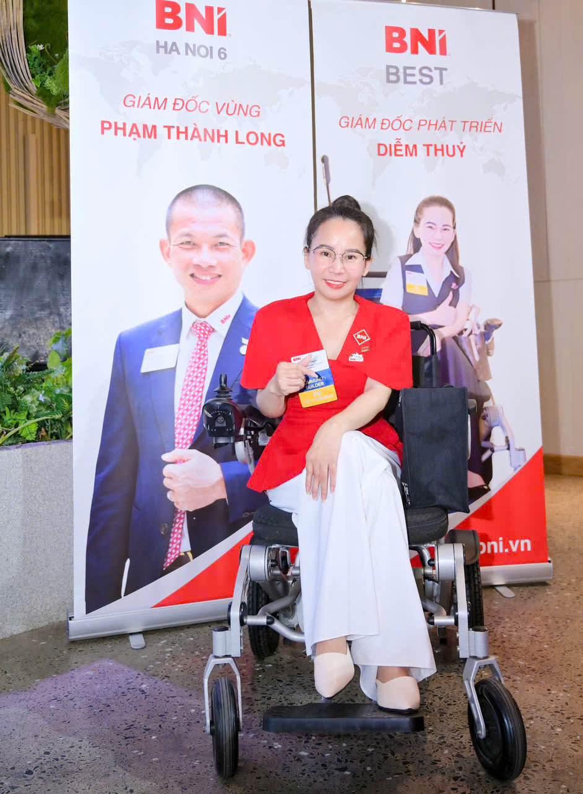
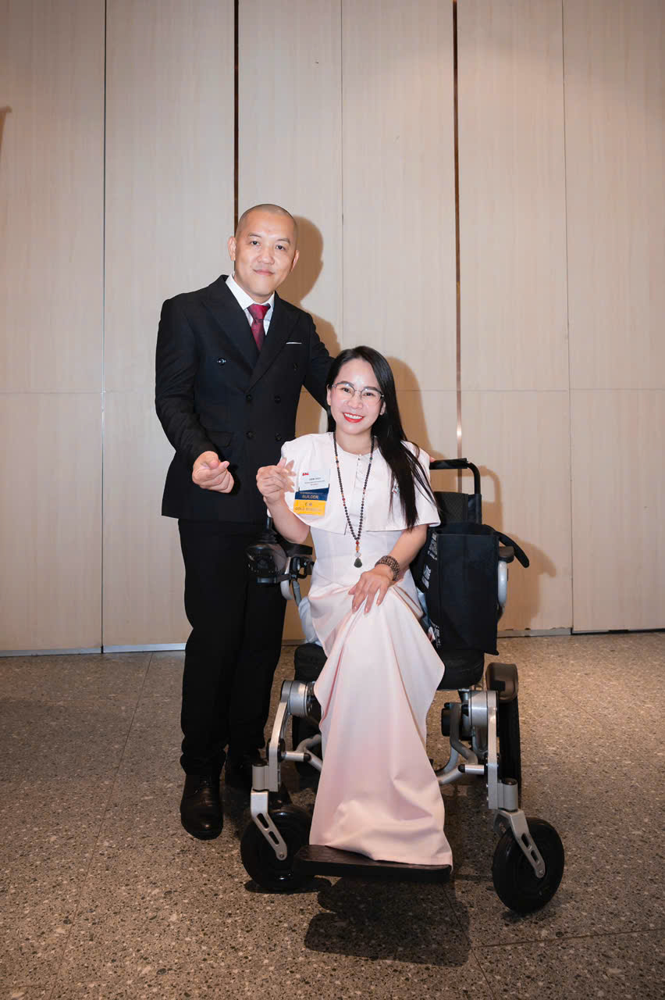

Người ta nhìn chiếc xe lăn của tôi và thấy một dấu chấm hết. Tôi nhìn nó và thấy một đòn bẩy.
Không phải nhà tù. Không phải bản án. Không phải dấu chấm hết.
Bạn có tin một người ngồi xe lăn, tay chân biến dạng, từng trốn 3 năm sau 4 bức tường — lại đang đứng trước hàng trăm con người để truyền lửa mỗi ngày không?
Đó là tôi. Diễm Thúy. Dược sĩ. 17 năm kinh doanh chuỗi nhà thuốc.
Hôm nay tôi kể bạn nghe câu chuyện thật của đời tôi. Không phải để bạn thương hại — mà để bạn nhìn lại cái cớ của chính mình.
Tôi sinh ra ở Quảng Ngãi. Ba làm công an. Mẹ buôn bán thuốc bảo vệ thực vật. Tuổi thơ tôi đầy đủ. Sung sướng. Hạnh phúc. Khỏe mạnh. Không một vết thương.
Hồi nhỏ tôi đã mơ một giấc mơ rất rõ ràng. Tôi muốn làm diễn giả truyền cảm hứng. Tôi muốn đào tạo người khác xây thương hiệu cá nhân. Tôi muốn giúp các cặp vợ chồng yêu thương nhau, giữ được mái ấm.
Bạn nhớ giấc mơ đó nhé. Vì cuối bài, nó sẽ quay lại.
Tôi luôn là đứa muốn chứng minh. Chứng minh mình giỏi. Chứng minh mình thành công. Và tôi cũng giỏi thêm một việc nữa: giấu nỗi đau.
Năm 18 tuổi. Lớp 12. Bác sĩ nói tôi bị viêm đa khớp dạng thấp.
Lúc đó tôi đâu hiểu gì. Tôi nghĩ uống vài viên thuốc là khỏi, như mọi cơn ốm vặt của tuổi trẻ. Tôi không biết căn bệnh này sẽ theo tôi đến cuối đời.
Đến nay đã 25 năm. 25 năm sống chung với đau đớn.
Có những đêm tôi nằm, nước mắt chảy, và hỏi ông trời một câu. Tại sao lại là tôi? Tôi sống trong sạch. Tôi không hại ai. Vậy tại sao tôi phải trả giá bằng đau đớn ròng rã suốt 25 năm?
Bạn đã bao giờ thấy đời mình bất công như vậy chưa? Tôi thì đã thấy. Và tôi đã oán giận rất lâu. Nhưng đó chưa phải là điều khó nhất.
8 năm trước, biến cố lớn nhất đời tôi ập đến. Tôi mang thai đứa con đầu lòng.
Bạn biết tôi khó khăn thế nào mới có được con không? Tôi đi cầu xin mẹ Quan Âm. Tôi tắm tượng Phật. Tôi cầu khẩn đủ đường mới mang thai được.
Vậy mà mới 6 tuần, các khớp của tôi sưng to. Biến dạng. Bác sĩ gọi tôi vào. Và khuyên tôi bỏ con.
Con số họ đưa ra như một nhát dao: 85% khả năng cả mẹ lẫn con cùng chết. Chỉ 15% sống sót. Và nếu sống, tôi sẽ phải ngồi xe lăn cả đời.
Bạn thử đặt mình vào chỗ tôi xem. 85% là chết — cả hai mẹ con. 15% là sống — nhưng tàn tật. Hầu hết mọi người sẽ chọn buông.
Tôi thì cầm bút lên.
Tôi ký tờ giấy tại bệnh viện. Tay run. Nước mắt chảy ngược vào trong. Ký để GIỮ CON. Vì con tôi có quyền được sống. Tôi không thể đem tính mạng con ra đổi lấy sức khỏe của mình. Đó là lựa chọn của tôi. Và tôi đã trả giá cho nó từng ngày.
Bạn biết hành trình sau đó của tôi thế nào không? Từ tuần thứ 6 đến lúc sinh, tôi không uống một viên thuốc điều trị nào. Một viên cũng không. Để con được an toàn.
Bạn hình dung được không? Một người viêm đa khớp dạng thấp, các khớp sưng to căng bóng, mà không một viên giảm đau.
Đau đến mức nào ư? Những lúc đau quá, tôi lấy chiếc khăn sữa nhét vào miệng. Tôi cắn răng. Tôi không dám khóc. Không dám rên một tiếng.
Vì tôi sợ con buồn. Và vì ông bà dạy: mẹ mang thai mà khóc lóc, nhăn nhó, thì con sinh ra sẽ không tươi, đời con sẽ khổ. Nên tôi nuốt hết vào trong. Tôi thà cắn nát chiếc khăn, còn hơn để con tôi khổ.
Bạn ạ, có những nỗi đau không có thuốc giảm. Chỉ có một chiếc khăn sữa và một người mẹ.
Rồi điều kỳ diệu xảy ra. Tôi thắng. Tôi lọt vào 15%. Con tôi chào đời — an toàn, khỏe mạnh. Còn tôi, tôi bước vào hành trình ngồi xe lăn.
Có những chiến thắng người ta phải trả bằng cả cơ thể mình. Và tôi không hối hận một giây nào.
Nhưng chiến thắng không có nghĩa là hết đau. Khi ngồi xe lăn, một nỗi sợ mới xuất hiện. Không phải sợ đau — mà sợ ánh mắt người ta nhìn mình.
Tôi có cả một chuỗi nhà thuốc. Nhưng tôi quản lý qua màn hình camera. Vì tôi sợ khách hàng, bệnh nhân đến hỏi mà tôi không đứng dậy tư vấn được.
Suốt 3 năm tôi không bước ra khỏi nhà. Ba năm. Bốn bức tường.
Có lúc đau quá, tôi tuyệt vọng. Tôi chỉ dám khóc khi không ai nhìn thấy. Tôi sợ mình trở thành kẻ tàn phế, vô dụng, gánh nặng cho chồng con.
Nhưng nghe tôi nói điều này. Tôi chưa bao giờ xấu hổ vì chiếc xe lăn này. Chưa một giây. Vì đó là cái giá tôi đã CHỌN để đổi lấy con được sống.
Cái xe lăn này không phải nỗi nhục. Nó là huân chương.
Tôi không chịu ngồi yên. Tôi tập tành bán hàng online. Mỹ phẩm. Thực phẩm chức năng. Đai nịt bụng latex. Tôi làm theo hệ thống.
Tôi thất bại nhiều lần. Nhưng tôi không cho phép mình bỏ cuộc — tôi lấy mỗi lần vấp ngã làm một bài học. Nhưng tôi không vui. Vì nó không đúng với con người tôi. Tôi là dược sĩ kia mà.
Và bạn biết không? Suốt thời gian đó, tôi bán hàng mà giấu nhẹm chuyện mình ngồi xe lăn. Không một ai biết. Tôi vẫn đang trốn.
Tôi thiếu một mảnh ghép. Tôi biết vậy. Nhưng tôi chưa tìm ra nó. Cho đến năm 2019.
Năm 2019, tôi gặp thầy Phạm Thành Long. Tôi học hết các khóa của thầy. Tôi bước vào Eagle Camp. Và thầy đập vỡ tư duy của tôi từ tận gốc.
Từ một kẻ nhút nhát trốn sau bốn bức tường, bán hàng mà giấu cả chiếc xe lăn — tôi DÁM. Tôi dám đối diện với mọi người trên chiếc xe lăn của mình. Tôi dám xuất hiện. Tôi dám đi khắp nơi.
Thầy giúp tôi hiểu một điều đảo ngược cả cuộc đời. Chiếc xe lăn không phải dấu chấm hết. Nó chỉ là phương tiện. Và hơn thế, nó là ĐÒN BẨY — điểm khác biệt của thương hiệu cá nhân tôi.
Cái mà tôi xấu hổ giấu giếm bao năm, lại chính là thứ khiến tôi không ai thay thế được.
Em là dược sĩ thì xây kênh Dược sĩ gia đình đi.
— Thầy Phạm Thành Long, một câu nói đổi đời tôiTôi đứng hình. Sao bao nhiêu năm tôi không đưa chính cái nghề của mình lên online? Sao tôi lại đi bán hệ thống của người khác? Từ hôm đó, tôi xây kênh thương hiệu cá nhân “Dược sĩ gia đình”. Và tôi thành công.
Đừng tưởng đứng trước đám đông là dễ với tôi. Lần đầu cầm micro, tôi phải lấy hơi rất nhiều lần. Tôi run. Tôi sợ. Tôi không dám mở miệng. Không dám quay video.
Nhưng tôi tự nhủ: nếu không vượt qua, tôi sẽ mãi đứng yên. Vậy là tôi đăng video đầu tiên. Đến hôm nay, số video tôi đăng nhiều không đếm xuể.
Cái khoảng cách giữa người đứng yên và người bứt phá — đôi khi chỉ là một video đầu tiên.
Thầy còn bảo tôi vào BNI, dù lúc đó tôi chẳng biết BNI là gì. Vào rồi mới thấy: đó là cộng đồng của các chủ doanh nghiệp, một môi trường tràn năng lượng tích cực. Tôi gắn bó với BNI 5 năm.
Năm 2022, tôi trở thành Chủ tịch BNI Rainbow Chapter — hơn 150 thành viên. Tôi nhận giải thưởng xuất sắc nhất. Hơn 2 năm nay, tôi làm Giám đốc cộng đồng BNI Best Chapter.
Bạn biết chúng tôi khởi đầu từ đâu không? 13 thành viên. 13 con người chuyển khoản ngay tại lớp học của thầy Long. Từ 13, chúng tôi xây lên 35. Đến hôm nay, gần 100 chủ doanh nghiệp sinh hoạt offline cùng nhau tại TP.HCM.
Người đàn bà từng trốn sau bốn bức tường, giờ ngồi giữa hàng trăm doanh nhân. Bạn thấy chiếc xe lăn cản tôi ở đâu không?


Nhưng điều khiến tôi tự hào nhất không phải con số đó. Thầy Long dạy tôi một câu tôi khắc vào lòng.
Mình làm thì chỉ nhớ 10%. Nhưng chia sẻ, hướng dẫn lại người khác thì nhớ đến 80%.
— Thầy Phạm Thành LongCâu đó định hình cả sứ mệnh của tôi. Tôi không chỉ xây kênh sức khỏe cho riêng mình. Tôi mở hành trình đào tạo coach 1:1 — dạy các bác sĩ, dược sĩ, huấn luyện viên dinh dưỡng tự xây kênh thương hiệu cá nhân của riêng họ.
Và kết quả? Hơn 100 học viên thành công. Kênh từ 100.000 đến 500.000 người theo dõi. Tỷ lệ học viên thành công 80 đến 90%. Có học viên còn học cả cách training để tự đào tạo lại các bác sĩ khác.
Mỗi lần học viên gửi kết quả về, tôi lại xúc động đến rơi nước mắt.
Bạn còn nhớ giấc mơ thuở bé của tôi không? Diễn giả truyền cảm hứng. Đào tạo người khác xây thương hiệu cá nhân. Cô bé tỉnh lẻ Quảng Ngãi ngày ấy đã làm được — theo một con đường mà nó chưa bao giờ dám tưởng tượng.
Có người hỏi tôi: điều gì giữ chị đứng dậy mỗi ngày? Câu trả lời rất đơn giản. Các con tôi. Chồng tôi — anh Nguyễn Thanh Vũ. Và các mẹ — đấng sinh thành mà tôi mang ơn báo hiếu.
Tôi là nguồn thu chính, là người quyết định tài chính trong nhà. Mỗi lần nhìn con, nhìn chồng, nhìn mẹ — tôi tự nhủ một điều: tôi không được phép là kẻ tàn phế vô dụng. Tôi phải là người có ý nghĩa. Để con hãnh diện. Để mẹ hãnh diện. Để chồng tự hào.
Hôm nay, gia đình tôi hạnh phúc. Ba con gái khỏe mạnh. Tôi vẫn ngồi xe lăn. Tay chân tôi vẫn biến dạng. Nhưng tinh thần tôi là tinh thần của một chiến binh.
Còn sức khỏe là còn tất cả. Nếu mai này tôi mất hết — tôi vẫn làm lại từ đầu.
Phía trước, tôi còn hai khát vọng lớn. Một là phát triển mạnh mảng đào tạo coach 1:1 xây kênh thương hiệu cá nhân — cùng chồng tôi. Vì sao cùng chồng? Vì nếu một ngày tôi mệt, chồng tôi vẫn đào tạo được. Còn kênh “Dược sĩ gia đình” thì cần chính sức khỏe của tôi.
Hai là mở thêm mảng tư vấn hạnh phúc gia đình — để chia sẻ hành trình giữ gìn mái ấm. Đúng như giấc mơ thuở bé: giúp các cặp vợ chồng yêu thương nhau.
Bạn thấy không? Vòng tròn đã khép lại.
Giờ tôi hỏi bạn. Một người ngồi xe lăn. Tay chân biến dạng. Từng nhét khăn sữa vào miệng cắn răng để giữ con. Từng trốn 3 năm sau bốn bức tường.
Người đó vẫn đứng dậy. Vẫn xây được kênh triệu view. Vẫn đào tạo hơn 100 con người. Vẫn ngồi giữa gần 100 doanh nhân.
Vậy còn bạn? Cái cớ của bạn để không bắt đầu — nó là gì?
Bạn đang đợi điều gì? Đợi hoàn hảo? Đợi đủ tiền? Đợi hết sợ? Không có ngày đó đâu, bạn ạ.
Đừng đợi đến khi đầy đủ mới bắt đầu. Đừng đợi hết sợ mới dám xuất hiện. Đừng để hoàn cảnh viết kịch bản cuộc đời bạn. Hãy bắt đầu ngay hôm nay — với đúng con người thật của bạn.
Thứ bạn đang giấu vì xấu hổ, có khi lại chính là đòn bẩy lớn nhất đời bạn. Như chiếc xe lăn của tôi.